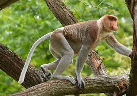

Lieu de vie: Le nasique vit dans les forêts côtières, les forêts marécageuses, les mangroves ; toujours à proximité d'un cours d'eau.
alimentation: herbivore
Longévité : 12 à 15 ans
Famille: cercopithécidés
Taille : 66 – 76 cm
comportement : Le nasique mène une vie sociale et grégaire en groupes de quinze à trente singes souvent composés d'individus du même sexe.